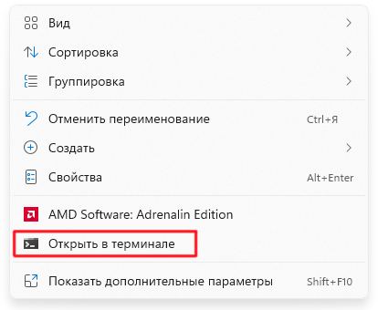

Реквием и Steam
Оглавление
Цель этой инструкции
11 ноября 2021 года Bethesda выпустила для Skyrim Special Edition обновление 1.6 или "Anniversary Edition", добавляющее в игру несколько модов из Creation Club и, что самое главное, вносящее изменения в исполняемый файл игры. В результате этого различные инструменты моддинга перестали работать, некоторые не работают с AE до сих пор. Bethesda не вынесла старую версию 1.5.97.0.8 в альтернативную ветку, а потому возможности откатиться через Steam клиент нет.
Проект Requiem For A Balance также совместим только с версией 1.5.97.0.8 Special Edition, а потому предлагаю вам ознакомиться с методом отката лицензии без сторонних патчеров (они любят ломать вещи) и без образов с пиратских сайтов.
Для этого мы будем использовать open-source утилиту Steam Depot Downloader, далее "SDD". Она использует библиотеку SteamKit2 для взаимодействия с сетью Steam и позволяет загружать определённые хранилища Steam определённых манифестов (разные версии).
Хранилища, в свою очередь, это логически организованное объединение файлов, которое пользователь загружает как единую группу. Каждому хранилищу присваивается уникальный идентификационный номер (DepotID). Когда пользователь устанавливает приложение, одно или несколько хранилищ загружаются и «подключаются» на локальном жестком диске
.
Например, "под капотом" Steam скачивает Skyrim SE как четыре разных хранилища - Skyrim Special Edition disk (ID 489831), Skyrim Special Edition core (ID 489832), Skyrim Special Edition exe (ID 489833) и Skyrim Special Edition russian (ID 489838), если у вас стоит русская локализация в свойствах.
Что нам понадобится
- Steam с установленным Skyrim Special Edition
- Последний релиз SDD
- Архив со сборкой RFAB последней версии
- NET 5.0 Runtime (для RFAB)
- NET 6.0 Runtime (для SDD)
Использование Steam Depot Downloader
Архив с SSD стоит распаковать в произвольную папку. После этого зайдите в неё и откройте терминал.
Синтаксис команд у SDD имеет следующий вид:
dotnet DepotDownloader.dll -app <id> -depot <id> -manifest <id> -username <username> -password <password>
По порядку:
- dotnet DepotDownloader.dll
- Используя NET 6.0 запустить DepotDownloader.dll
- -app <id>
- ... для определённого приложения
- -depot <id>
- ... загрузить определённое хранилище
- -manifest <id>
- ... определённой версии
- -username <username>
- ... ваш логин Steam
- -password <password>
- ... ваш пароль Steam
Да, именно. Ваш логин и пароль. Утилита передаст их серверам Steam, а затем запросит подтверждение, если у вас настроена двухфакторная аутентификация. Это нужно для того, чтобы подтвердить наличие у вас лицензии. Если сомневаетесь, откройте ссылку на релиз и неспешно ознакомьтесь с проектом утилиты. Это оригинальный репозиторий, не форк моего авторства.
Скачивание хранилищ
Теперь, когда вы ознакомились со швейцарским ножом даунгрейда, предлагаю вам начать скачивать хранилища по порядку.
Самостоятельно узнать, какие хранилища существуют для SE, вы можете в базе данных.
Начнём с 489831 Skyrim Special Edition disk
Это хранилище содержит внутренности каталога Data, но не этот манифест нам нужен:
Нам нужен манифест шестилетней давности. Последняя версия хранилища перед обновлением 1.6. Этот манифест имеет ID 7848722008564294070 и вы можете найти его во вкладке Manifests слева.
При переходе по этому ID файлы внутри окажутся недоступными для просмотра. Но не волнуйтесь. Это именно то, что мы ищем:

Скачиваем хранилище:
dotnet DepotDownloader.dll -app 489830 -depot 489831 -manifest 7848722008564294070 -username <steam-username> -password <steam-password>
Если утилита пожалуется вам на отсутствие NET 6.0, перейдите по ссылке (она будет указана в выводе) и установите его.
Иногда во время загрузки происходит ошибка получения чанка данных. После завершения команды, проверьте, не было ли у вас таких ошибок и если были, просто введите команду в точности ещё раз. Не волнуйтесь, утилита не будет скачивать всё заново. Она просто доскачает нужное.
Итог должен выглядеть примерно так:
Повторяем по тому же принципу с тремя остальными командами:
dotnet DepotDownloader.dll -app 489830 -depot 489832 -manifest 8702665189575304780 -username <steam-username> -password <steam-password>
Skyrim Special Edition core - Большое хранилище с шейдерами, интерфейсом, текстурами, библиотеками, лаунчером и, по сути, всем, что в первое не поместилось
dotnet DepotDownloader.dll -app 489830 -depot 489833 -manifest 2289561010626853674 -username <steam-username> -password <steam-password>
Skyrim Special Edition exe - Одиночный исполняемый файл, загрузится за мгновение, не отходите далеко
dotnet DepotDownloader.dll -app 489830 -depot 489838 -manifest 6206633033379583541 -username <steam-username> -password <steam-password>
Skyrim Special Edition russian - Русская локализация
Соединяем хранилища
Теперь, когда вы скачали все четыре хранилища, вы можете переместиться в каталог depots в папке вашего SDD:

Это наша игра, просто по частям. Для удобства предлагаю создать каталог 1.5.97.0.8 Backup и сбросить туда содержимое всех хранилищ. В каждом хранилище будет единичная папка с ID манифеста и уже внутри неё нужные нам данные. Соединяем все по порядку (!) в новый каталог, папки .DepotDownloader не берём.
На выходе получаем ровно вот такую картину:
Заменяем 1.6.X на 1.5.97.0.8
Зайдите в свою библиотеку Steam и нажмите ПКМ на строке Skyrim Special Edition -> Выберите Manage -> Browse Local Files. Затем удалите всё внутри каталога.
Теперь скопируйте на место удалённых файлов содержимое каталога с версией 1.5.97.0.8. Почему сначала нужно было качать новую версию через Steam, если мы её удалим? В противном случае при попытке запустить исполняемый файл Skyrim, Steam бы автоматически начал бы скачивать новую версию. А в нашем случае он думает, что всё обновлено и не мешает нам.
Теперь запустите Скайрим через Steam и настройте графику по своему вкусу в лаунчере. После этого запускать саму игру не нужно, можете просто закрыть и приступить к настройке RFAB.
Иногда встречаются ошибки по типу "Cannot find .INI file". Ответ поддержки Bethesda по этому поводу.
Если ваши инструменты не видят каталог Data после переустановки игры таким способом, попробуйте поправить запись Installed Path в реестре Computer\HKEY_LOCAL_MACHINE\SOFTWARE\WOW6432Node\Bethesda Softworks\Skyrim Special Edition\
Установка сборки
Устанавливаете сборку по инструкции. Вот запись того, как это получилось у меня, плюс проверка с запуском игры. Все медленные части процесса ускорены:
Готово! Надеюсь, что у вас не возникло проблем. Если нашли опечатку или неточность, пожалуйста, напишите мне: Silent Lumi#6662